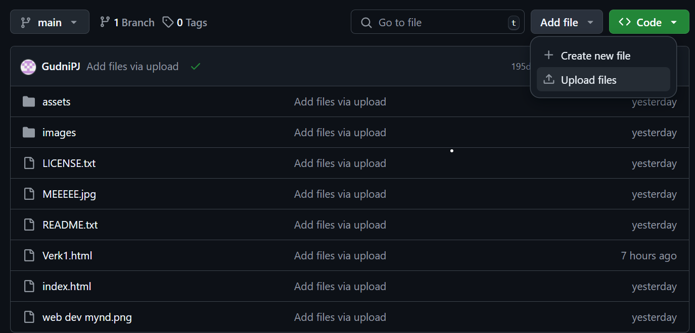
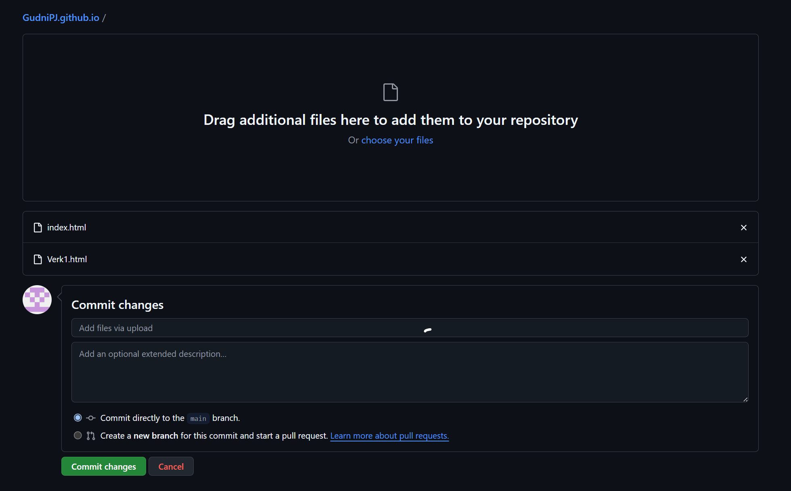

Hönnun síðu
Þar sem ég hef mjög takmarkaða reynslu af bæði html og css forritun ákvað ég að nýta mér vefsíðusnið sem finna má á netinu. Í myndböndum leiðbeinanda var bent á að hægt væri að finna gott úrval á síðunni html5up.net. Sniðið sem varð fyrir valinu var Strata en það var valið vegna þess að það var einfalt að vinna með og það heldur öllum mikilvægum upplýsingum á sama stað. Einnig þótti mér sniðið bara snyrtilegt og flott.
Viðmótið sem ég nota til að vinna með html og css skrárnar er Brackets en þa var einnig bent á það í myndskeiðum leiðbeinanda. Einnig var það hentugt þar sem sú litla reynsla sem ég hef í vefforritun kemur úr því að vinna í Brackets í framhaldsskóla.
Sniðið kom auðvitað með allskonar óþarfa og því var fyrsta verk að losa mig við allt sem þurfti ekki að vera inni á síðunni ásamt því að breyta textunum sem komu með sniðinu eins og titil síðunnar og header. Mesta vesenið var í rauninni að búa til undirsíðuna fyrir verkefnið en einföld google leit leysti það vandamál.
Þegar öll helstu atriði síðunnar voru tilbúin bætti ég við 'dummy' staðsetningum fyrir hlekki fyrir verkefnin sem ég mun vinna í áfanganum. Eins og er er ekkert á bakvið hlekkina á forsíðunni og ekki er hægt að ýta á neina hlekki nema 'heim' inni á verkefnasíðunni.
Markmið og væntingar í áfanganum
Væntingar mínar til áfangans eru að læra betur hvernig á að hanna hluti til framleiðslu og læra betur um framleiðsluaðferðir sem eru notaðar í raunheiminum.
Lokaverkefnispælingar
Eins og staðan er þykir mér fullsnemmt að vera að velta fyrir mér lokaverkefnishugmyndum, sérstaklega þar sem ég á enn eftir að kynna mér aðferðirnar sem við munum nota í áfanganum. Þó er ég búinn að vera að skoða verkefni nemenda síðan í fyrra til að sækja innblástur.
Github ves
Þegar ég var að lesa yfir eldri síður tók ég eftir að helsta vesenið í þessu verkefni væri að gefa út síðuna á github. Því ákvað ég að kynna mér málið áður en ég byrjaði frekar en að reyna að finna út úr þessu sjálfur. Myndbönd Hafliða komu sér ágætlega í þessu en á endanum fylgdi ég fyrirmælum í myndbandinu How to Host a Website On Github Pages frá YouTube rásinni Kenny Yip Coding. Þetta sparaði mér hellings tíma og vesen.
Þegar kom að því að hlaða síðunni upp á github í fyrsta skipti byrjaði ég á því að reyna að nota git viðmótið en það gekk brösulega og frekar en að halda áfram að vesenast í því kaus ég að nota aðferðina sem var notuð í myndbandinu sem ég horfði á og nota einfaldlega 'drag and drop upload' aðferðina sem github býður upp á. Þessi aðferð gerir það mjög auðvelt að setja bara inn nákvæmlega þær skrár sem maður þarf inn. Til þess að gera þetta þarf maður einfaldlega að smella á 'add file' og velja 'upload files' í github repository-inu og þá fær maður glugga þar sem maður getur dregið inn skrár beint úr File explorer viðmótinu á tölvunni. Til þess svo að uppfæra síðuna eða bæta við nýjum skrám þarf bara að uploada skjalinu aftur með sama nafn og það mun uppfæra síðuna.
 